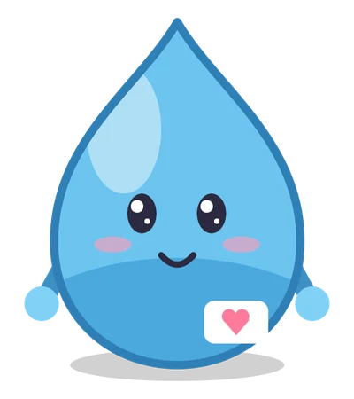

教室の案内役
しずくさん
心の仕組みを、やさしく案内してくれる水のしずく。
- どんな子？
- 心の健康教室の案内役。「ハートマップ（心の図面）」をつかって、見たもの・聞いたものが気分になるまでの流れを、ひとつずつ説明してくれます。
- 性格
- おだやかで、聞き上手。あせらず、相手のペースに合わせてくれます。自分のことは「ぼく」とよび、ていねいな話し方をします。
- 名前の由来
- 水のしずく。水は、どんな器にも形を合わせられます。かたくて折れる心ではなく、しなやかな心のしるしです。
- トレードマーク
- 胸の名札のハート。心の健康教室のマークです。
- 登場するところ
- 事業所紹介アニメ、五感トレーニングの動画
「見るもの、聞くもの、におい、味、触れるもの。この流れぜんぶが、『心』なんです。」